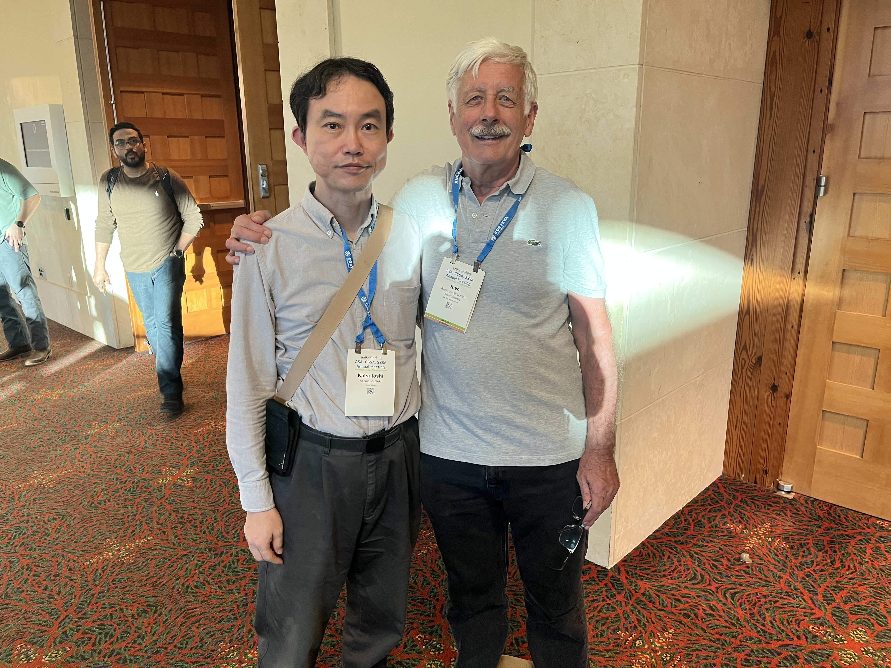
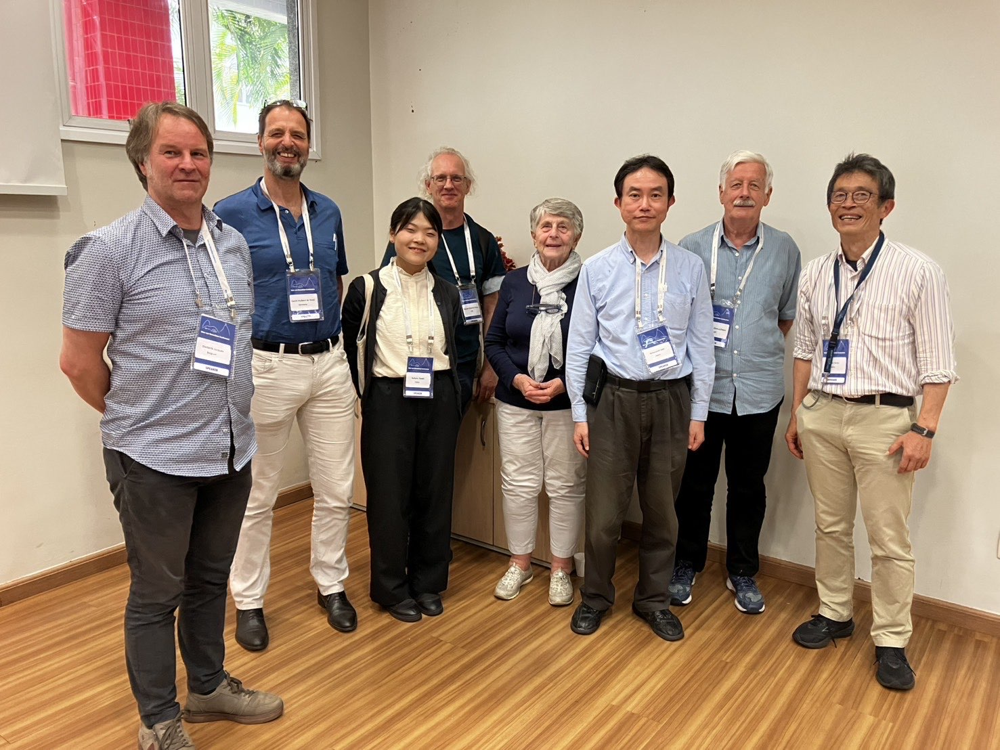

This is a photo of Katsutoshi Seki with Dr. Rien van Genuchten, who was awarded the Wolf Prize Laureate in Agriculture 2023, taken at the ASA, CSSA, SSSA International Annual Meeting in San Antonio in November 2024.
Taken at the RVG conference in Rio de Janeiro in May 2025.
